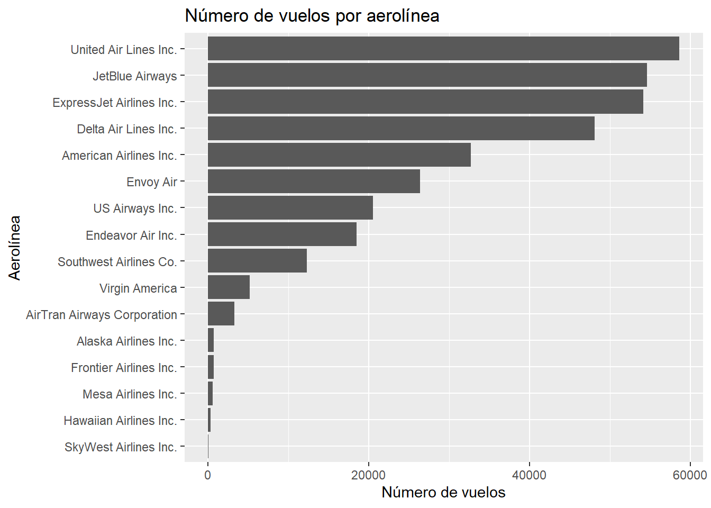
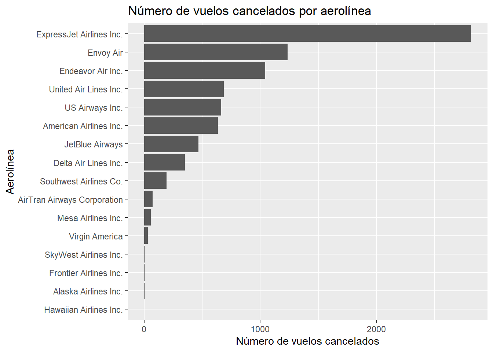
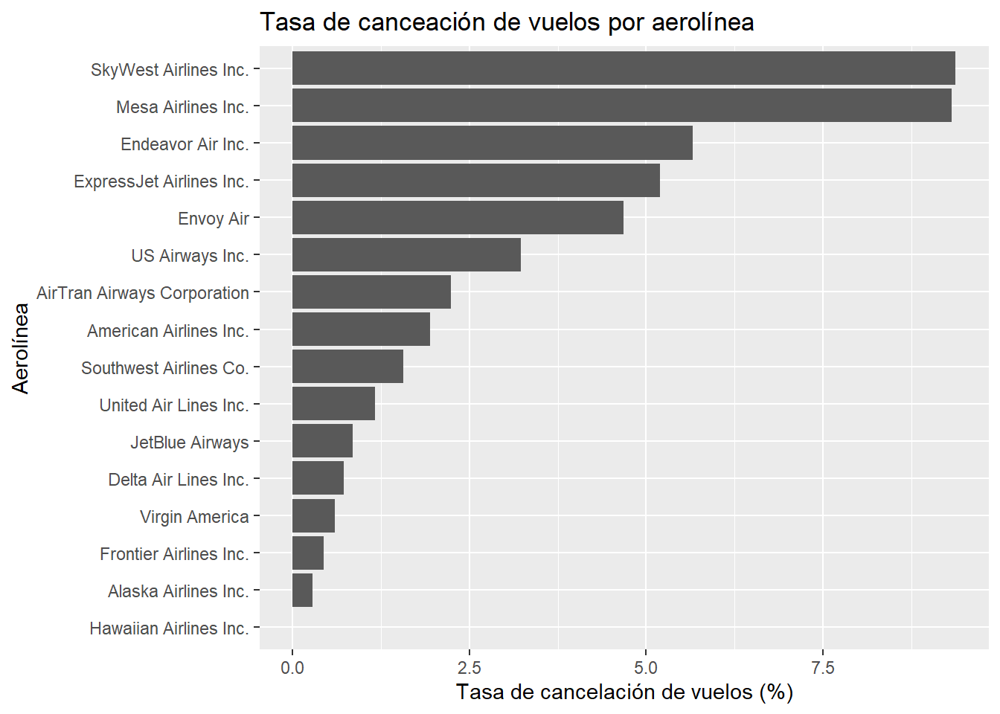
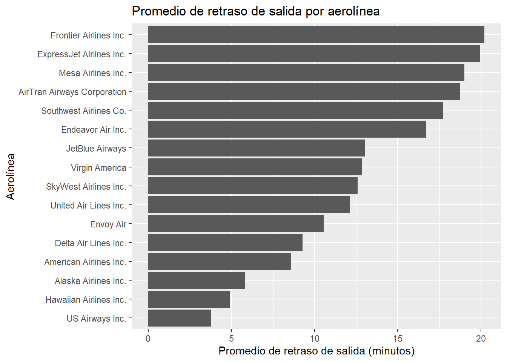
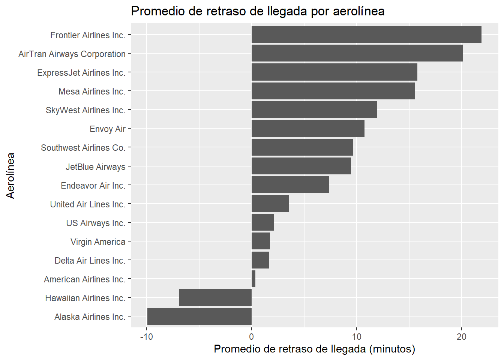

# install.packages(c("dplyr", "purrr", "ggplot2", "nycflights13"))
library("dplyr")
library("purrr")
library("ggplot2")
library("nycflights13")Rendimiento de aerolíneas NYC
Instalación y carga de paquetes
Instalar y cargar los paquetes nycflights13 y purrr.
Además de nycflights13 y purrr, se instalarán y cargarán los paquetes dplyr y ggplot2, pues serán necesarios para la realización de la actividad.
Cargar el conjunto de datos flights y familiarizarse con su estructura.
El conjunto de datos flights contiene información sobre vuelos que partieron de los aeropuertos de Nueva York en el año 2013. Contiene 336.776 observaciones y 19 variables. A continuación se muestra una vista previa de los datos.
flights %>%
head(10) %>%
knitr::kable()| year | month | day | dep_time | sched_dep_time | dep_delay | arr_time | sched_arr_time | arr_delay | carrier | flight | tailnum | origin | dest | air_time | distance | hour | minute | time_hour |
|---|---|---|---|---|---|---|---|---|---|---|---|---|---|---|---|---|---|---|
| 2013 | 1 | 1 | 517 | 515 | 2 | 830 | 819 | 11 | UA | 1545 | N14228 | EWR | IAH | 227 | 1400 | 5 | 15 | 2013-01-01 05:00:00 |
| 2013 | 1 | 1 | 533 | 529 | 4 | 850 | 830 | 20 | UA | 1714 | N24211 | LGA | IAH | 227 | 1416 | 5 | 29 | 2013-01-01 05:00:00 |
| 2013 | 1 | 1 | 542 | 540 | 2 | 923 | 850 | 33 | AA | 1141 | N619AA | JFK | MIA | 160 | 1089 | 5 | 40 | 2013-01-01 05:00:00 |
| 2013 | 1 | 1 | 544 | 545 | -1 | 1004 | 1022 | -18 | B6 | 725 | N804JB | JFK | BQN | 183 | 1576 | 5 | 45 | 2013-01-01 05:00:00 |
| 2013 | 1 | 1 | 554 | 600 | -6 | 812 | 837 | -25 | DL | 461 | N668DN | LGA | ATL | 116 | 762 | 6 | 0 | 2013-01-01 06:00:00 |
| 2013 | 1 | 1 | 554 | 558 | -4 | 740 | 728 | 12 | UA | 1696 | N39463 | EWR | ORD | 150 | 719 | 5 | 58 | 2013-01-01 05:00:00 |
| 2013 | 1 | 1 | 555 | 600 | -5 | 913 | 854 | 19 | B6 | 507 | N516JB | EWR | FLL | 158 | 1065 | 6 | 0 | 2013-01-01 06:00:00 |
| 2013 | 1 | 1 | 557 | 600 | -3 | 709 | 723 | -14 | EV | 5708 | N829AS | LGA | IAD | 53 | 229 | 6 | 0 | 2013-01-01 06:00:00 |
| 2013 | 1 | 1 | 557 | 600 | -3 | 838 | 846 | -8 | B6 | 79 | N593JB | JFK | MCO | 140 | 944 | 6 | 0 | 2013-01-01 06:00:00 |
| 2013 | 1 | 1 | 558 | 600 | -2 | 753 | 745 | 8 | AA | 301 | N3ALAA | LGA | ORD | 138 | 733 | 6 | 0 | 2013-01-01 06:00:00 |
Creación de subconjuntos de datos por aerolínea
Dividir el conjunto de datos flights en subconjuntos, uno por cada aerolínea.
Para dividir el conjunto de datos flights en subconjuntos por aerolínea, utlilizaré la función group_by() del paquete dplyr, de esta forma obtendré un objeto de tipo grouped_df que es una copia del conjunto de datos original, pero con la diferencia de que ahora está agrupado por aerolínea.
grouped_flights <- flights %>%
group_by(carrier)Crear una lista donde cada elemento sea un subconjunto de datos correspondiente a una aerolínea.
Para crear una lista donde cada elemento sea un subconjunto de datos correspondiente a una aerolínea, utilizaré la función split(), de esta forma obtendré una lista (de data frames) con 16 subconjuntos del conjunto de datos flights, uno por cada aerolínea.
flights_by_carrier <- grouped_flights %>%
split(.$carrier)Análisis de datos con purrr
El objetivo de esta sección será calcular diferentes estadísticas por aerolínea utilizando funciones del paquete purrr. Además, dado que el paquete nyclights13 contiene un conjunto de datos con información básica sobre las aerolíneas, agregaré los resultados obtenidos a este conjunto de datos, para así obtener información más completa sobre las aerolíneas en un solo data frame.
extended_airlines <- airlinesNúmero de vuelos por aerolínea
Para calcular el número de vuelos por aerolínea, utilizaré la función map_int(), obteniendo así una lista con 16 valores enteros, representando el número total de vuelos por aerolínea.
n_flights <- flights_by_carrier %>%
map_int(function(x) {
nrow(x)
})
extended_airlines$flights <- n_flightsNúmero de vuelos cancelados por aerolínea
Para calcular el número de vuelos cancelados por aerolínea, utilizaré la función map_int(), obteniendo así una lista con 16 valores enteros, representando el número total de vuelos cancelados por aerolínea.
Dado que el conjunto de datos flights no contiene una variable explícita que indique si un vuelo fue cancelado o no, visualizando los datos, noté que aquellos vuelos sin registro de hora de salida, tampoco tenían registro de hora de llegada (ni registros de retraso de salida y llegada), por lo que asumí que estos vuelos fueron cancelados.
n_cancelled <- flights_by_carrier %>%
map_int(function(x) {
sum(is.na(x$dep_time))
})
extended_airlines$canc_flights <- n_cancelledTasa de cancelación de vuelos por aerolínea
Aprovechando los resultados obtenidos en los dos numerales anteriores, calcularé la tasa de cancelación de vuelos por aerolínea, dividiendo el número de vuelos cancelados por aerolínea entre el número total de vuelos por aerolínea.
cancel_rate <- n_cancelled / n_flights
extended_airlines$canc_rate <- cancel_ratePromedio de retraso de salida y llegada por aerolínea
Para calcular el promedio de retraso de salida y llegada por aerolínea, utilizaré la función map_dbl(), obteniendo así una lista con 16 valores numéricos, representando el promedio de retraso de salida y llegada por aerolínea.
Cabe destacar que no tome en cuenta los valores faltantes (NA), por lo que el promedio de retraso de salida y llegada por aerolínea se calculó únicamente con los valores numéricos existentes.
avg_dep_delay <- flights_by_carrier %>%
map_dbl(function(x) {
mean(x$dep_delay,
na.rm = TRUE
)
})
avg_arr_delay <- flights_by_carrier %>%
map_dbl(function(x) {
mean(x$arr_delay,
na.rm = TRUE
)
})
extended_airlines$avg_dep_delay <- avg_dep_delay
extended_airlines$avg_arr_delay <- avg_arr_delayPromedio de tiempo de vuelo por aerolínea
Para calcular el promedio de tiempo de vuelo por aerolínea, utilizaré la función map_dbl(), obteniendo así una lista con 16 valores numéricos, representando el promedio de tiempo de vuelo por aerolínea.
Al igual que en el numeral anterior, no tome en cuenta los valores faltantes.
avg_air_time <- flights_by_carrier %>%
map_dbl(function(x) {
mean(x$air_time,
na.rm = TRUE
)
})
extended_airlines$avg_air_time <- avg_air_timePromedio de distancia de vuelo por aerolínea
Para calcular el promedio de distancia de vuelo por aerolínea, utilizaré la función map_dbl(), obteniendo así una lista con 16 valores numéricos, representando el promedio de distancia de vuelo por aerolínea.
Al igual que en los dos numerales anteriores, no tome en cuenta los valores NA.
avg_distance <- flights_by_carrier %>%
map_dbl(function(x) {
mean(x$distance,
na.rm = TRUE
)
})
extended_airlines$avg_distance <- avg_distancePromedio de velocidad de vuelo por aerolínea
Para calcular el promedio de velocidad de vuelo por aerolínea, utilizaré la función map_dbl(), obteniendo así una lista con 16 valores numéricos, representando el promedio de velocidad de vuelo por aerolínea.
Al igual que en los tres numerales anteriores, no tome en cuenta los valores faltantes.
avg_speed_miles_per_minute <- flights_by_carrier %>%
map_dbl(function(x) {
mean(x$distance / x$air_time,
na.rm = TRUE
)
})
avg_speed_miles_per_hour <- avg_speed_miles_per_minute * 60
# avg_speed_km_per_hour <- avg_speed_miles_per_hour * 1.609344
extended_airlines$avg_speed <- avg_speed_miles_per_hourAeropuerto de origen más frecuente por aerolínea
Para calcular el aeropuerto de origen más frecuente por aerolínea, utilizaré la función map_chr(), obteniendo así una lista con 16 valores de tipo caracter, representando el aeropuerto de origen más frecuente por aerolínea.
most_frequent_origin <- flights_by_carrier %>%
map_chr(function(x) {
names(
sort(
table(x$origin),
decreasing = TRUE
)
)[1]
})
extended_airlines$most_frequent_origin <- most_frequent_originAeropuerto de destino más frecuente por aerolínea
Similar al numeral anterior, para calcular el aeropuerto de destino más frecuente por aerolínea, utilizaré la función map_chr(), obteniendo así una lista con 16 valores de tipo caracter, representando el aeropuerto de destino más frecuente por aerolínea.
most_frequent_dest <- flights_by_carrier %>%
map_chr(function(x) {
names(
sort(
table(x$dest),
decreasing = TRUE
)
)[1]
})
extended_airlines$most_frequent_dest <- most_frequent_destAnálisis exploratorio de datos
Una vez realizados los cálculos anteriores, realizaré un análisis exploratorio de datos, con el objetivo de visualizar los resultados obtenidos.
Número de vuelos por aerolínea
extended_airlines %>%
ggplot(
aes(
x = reorder(name, flights),
y = flights
)
) +
geom_col() +
coord_flip() +
labs(
x = "Aerolínea",
y = "Número de vuelos",
title = "Número de vuelos por aerolínea"
)
A partir de los resultados obtenidos, podemos observar que la aerolínea con mayor número de vuelos durante el año 2013 fue United Airlines, seguida por JetBlue Airways y ExpressJet Airlines Inc. Mientras que la aerolínea con menor número de vuelos fue SkyWest Airlines.
Número de vuelos cancelados por aerolínea
extended_airlines %>%
ggplot(
aes(
x = reorder(name, canc_flights),
y = canc_flights
)
) +
geom_col() +
coord_flip() +
labs(
x = "Aerolínea",
y = "Número de vuelos cancelados",
title = "Número de vuelos cancelados por aerolínea"
)
A partir de los resultados obtenidos, podemos observar que la aerolínea con mayor número de vuelos cancelados durante el año 2013 fue ExpressJet Airlines Inc, seguida por Envoy Air y Endeavor Air Inc. Mientras que la aerolínea con menor número de vuelos cancelados fue Hawaiian Airlines Inc.
Tasa de cancelación de vuelos por aerolínea
extended_airlines %>%
ggplot(
aes(
x = reorder(name, canc_rate),
y = canc_rate * 100
)
) +
geom_col() +
coord_flip() +
labs(
x = "Aerolínea",
y = "Tasa de cancelación de vuelos (%)",
title = "Tasa de canceación de vuelos por aerolínea"
)
A partir de los resultados obtenidos, podemos observar que la aerolínea con mayor tasa de cancelación de vuelos durante el año 2013 fue SkyWest Airlines, seguida por Mesa Airlines Inc. Mientras que la aerolínea con menor tasa de cancelación de vuelos fue Hawaiian Airlines Inc.
Promedio de retraso de salida por aerolínea
extended_airlines %>%
ggplot(
aes(
x = reorder(name, avg_dep_delay),
y = avg_dep_delay
)
) +
geom_col() +
coord_flip() +
labs(
x = "Aerolínea",
y = "Promedio de retraso de salida (minutos)",
title = "Promedio de retraso de salida por aerolínea"
)
A partir de los resultados obtenidos, podemos observar que la aerolínea con mayor promedio de retraso de salida durante el año 2013 fue Frontier Airlines Inc, seguida por ExpressJet Airlines Inc y Mesa Airlines Inc. Mientras que la aerolínea con menor promedio de retraso de salida fue US Airways Inc.
Promedio de retraso de llegada por aerolínea
extended_airlines %>%
ggplot(
aes(
x = reorder(name, avg_arr_delay),
y = avg_arr_delay
)
) +
geom_col() +
coord_flip() +
labs(
x = "Aerolínea",
y = "Promedio de retraso de llegada (minutos)",
title = "Promedio de retraso de llegada por aerolínea"
)
A partir de los resultados obtenidos, podemos observar que la aerolínea con mayor promedio de retraso de llegada durante el año 2013 fue Frontier Airlines Inc, seguida por AirTran Airways Corporation y ExpressJet Airlines Inc. Mientras que la aerolínea con menor promedio de retraso (incluso llegadas adelantadas) fue Alaska Airlines Inc.
Observaciones
A partir de los resultados obtenidos, establecí las siguientes observaciones:
Si bien SkyWest Airlines fue la aerolínea con la mayor tasa de cancelación de vuelos, esta también fue la aerolínea con el menor número de vuelos (y a su vez una de las aerolíneas con menor número de vuelos cancelados). Investigando un poco más, encontré que SkyWest Airlines es una aerolínea regional, y que además opera vuelos para otras aerolíneas. Así que se podría decir que su alto índice de cancelación de vuelos se debe a los pocos vuelos que operó bajo su nombre.
De las tres aerolíneas con mayor número de vuelos en el año 2013 (United Airlines, JetBlue Airways y ExpressJet Airlines Inc), se puede entrever que además de que ExpressJet Airlines Inc es la aerolínea con menor cantidad de vuelos entre estas tres, presenta el doble y seis veces más de vuelos cancelados que United Airlines y JetBlue Airways, respectivamente. Además, ExpressJet Airlines Inc es la aerolínea con mayor promedio de retraso de salida y llegada entre estas tres, lo que podría indicar que la aerolínea podría no ofrecer un servicio a sus clientes a la altura de sus competidores.
Las columnas de tiempo, distancia y velocidad de vuelo servirían para realizar un análisis más profundo de los retrasos de vuelo, ya que se podría determinar si los retrasos se deben a factores externos (clima, tráfico aéreo, etc.) o a factores internos (mantenimiento, tripulación, etc.), pues se podría determinar si los retrasos se deben a que los vuelos son más largos o más cortos de lo normal, o si los vuelos son más rápidos o más lentos de lo normal.
Las columnas de origen y destino más frecuentes por aerolínea servirían para determinar si las aerolíneas operan en ciertas regiones del país, o si operan en ciertos aeropuertos.